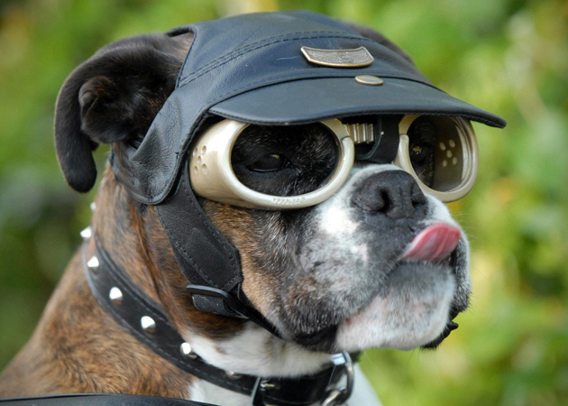

Doggles
Doggles are a commercial brand of sunglasses for dogs. They are constructed out of a tinted polycarbonate material for UV protection, with elastic straps to secure them to the dog's head.
While marketed as a fashion item, several practical and medical uses have been reported, and prescription lenses for dogs with impaired eyesight are available.